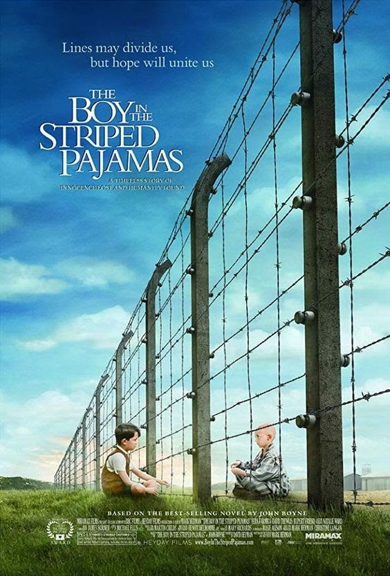

Cinema d'animació
Es caracteritza per no recórrer a la tècnica del rodatge d'imatges reals sinó a una o més tècniques d'animació. Les tècniques tradicionals han estat durant molt de temps el dibuix animat o l'animació en volum, encara que en temps més recents també es recorre a l'animació per computadora.
El meu veí Totoro
El meu veí Totoro és una pel·lícula dirigida per Hayao Miyazaki el 1988. Va ser realitzada pels Estudis Ghibli, i va tenir tant d'èxit al Japó que aquests l'agafaren com a insígnia de l'estudi.
La pel·lícula és un retrat simpàtic de la vida rural al Japó dels anys cinquanta. Un professor universitari es trasllada amb les seves dues filles a una casa a prop d'un bosc mentre la seva dona es recupera de tuberculosi en un sanatori rural. Les seves filles aprenen que hi ha éssers que només poden veure aquells de cor pur. Mei, resulta fascinada al trobar dos petits esperits i es determina a trobar al rei del bosc, Totoro.
Snow White and the Seven Dwarfs
Snow White and the Seven Dwarfs és una pel·lícula de 1937, dirigida per David Hand i produïda per Walt Disney. Es tracta del primer llargmetratge sonor i en colors de dibuixos animats de la història del cinema.
Una reina sent enveja quan el seu mirall màgic li diu que Blancaneu a passat a ser la més bella del regne. És per això que ordena que la matin. Blancaneu s’amaga al bosc per continuar viva, on troba una casa habitada per set nans. Ella es queda a viure amb ells però la madrastra, al veure que continua viva, prepara una poma enverinada que li dona fent-se passar per una anciana venedora. Blancaneu cau morta i la seva única cura és el petó d’un príncep. Un príncep que passava pel bosc la besa, tornant-li la vida.
El productor Walt Disney va rebre un Oscar honorífic per la pel·lícula i va rebre diferents títols que la consideraven una de les millors pel·lícules d'animació.
Toy Story
Toy Story és una pel·lícula de 1995 generada per ordinador produïda per Pixar i distribuïda per Walt Disney Pictures. Va ser el primer llargmetratge totalment animat per computadora i el primer projecte important de Pixar al cinema.
La família de l'Andy es mudarà de casa aviat i les joguines fan una reunió per afinar els últims detalls de la mudança. Al terme de la reunió recorden que aquest dia és l'aniversari d'Andy i la majoria de les joguines tenen por de ser reemplaçats per algun regal que li puguin fer a Andy. Andy rep com a regal una joguina anomenada Buzz Lightyear, una figura d'acció espacial que captarà tota la seva atenció, creant un conflicte amb la seva anterior joguina preferida, en Woody.
Frozen
Frozen és una pel·lícula del 2013, produïda per Walt Disney Animation Studios.
Explica la història d'Anna, una princesa valenta que fa un llarg viatge per trobar a Elsa, la seva germana perduda: la Reina de les Neus. Aquesta, a fugit del regne degut a la pressió que li comporta tenir poders màgics.
La crítica la va definir com el millor musical animat de Disney des de 1989. També va ser un èxit comercial. Frozen va guanyar un Oscar a la millor pel·lícula d'animació i un a la millor cançó original , el Globus d'Or a la millor pel·lícula d'animació, el BAFTA a la millor pel·lícula d'animació, i cinc Premis Annie.
The Lion King
The Lion King és una pel·lícula de 1994, produïda per Walt Disney Feature Animation i dirigida per Roger Allers i Rob Minkoff.
La pel·lícula gira entorn d'un jove lleó de l'Àfrica anomenat Simba, que aprèn quin és el seu lloc en el "cicle de la vida" lluitant contra diversos obstacles fins a convertir-se en el rei legítim del seu poble amb l’ajuda dels seus amics i de la seva família.
Les cançons van ser escrites pel compositor Elton John i el lletrista Tim Rice, els arranjaments instrumentals van anar a càrrec de Hans Zimmer. Va guanyar, entre altres premis, l'Oscar a la millor banda sonora i a la millor cançó original.
L'any 2019 se'n va fer un remake live action, també amb el nom de The Lion King.
Cinema de ciència ficció
Es caracteritza per no recórrer a la tècnica del rodatge d'imatges reals sinó a una o més tècniques d'animació. Les tècniques tradicionals han estat durant molt de temps el dibuix animat o l'animació en volum, encara que en temps més recents també es recorre a l'animació per computadora.
Jurassic Park
Jurassic Park és una pel·lícula dirigida per Steven Spielberg i estrenada el 1993.
La pel·lícula descriu la clonació de diverses espècies de dinosaures amb l’objectiu de crear un parc de diversions. Els inversors del projecte decideixen realitzar una prova de les instal·lacions, abans de la inauguració del parc. Tanmateix, la sobtada aparició d'un cicló tropical i l'organització d'un sabotatge causen que els sistemes de seguretat informàtica deixin de funcionar i els dinosaures comencin a fugir de les seves instal·lacions. L'equip del parc intenta restablir els sistemes, però com que és massa tard, comencen a fugir de l'illa.
Avatar
Avatar és una pel·lícula del 2009 filmada, dirigida i produïda per James Cameron.
Ambientada el 2154, narra els esdeveniments que tenen lloc a Pandora, una lluna del sistema estel·lar Alfa del Centaure, habitada per indígenes humanoides, els na'vi, amb qui els colons humans que es dediquen a la mineria estan en conflicte per les reserves d'un mineral molt valuós. Els na'vies resisteixen a l'expansió dels colons, que posa en perill la seva existència i l'ecosistema de tot el satèl·lit.
Star Wars Episode IV
Star Wars episodi IV: Una nova esperança és una pel·lícula que s'estrenà l'any 1977, i fou escrita i dirigida per George Lucas. Va obtenir sis premis Oscar d'un total de deu nominacions.
La trama descriu la història d'un grup de guerrillers l'objectiu del qual és destruir l'estació espacial estrella de la mort, creada per l'opressor Imperi Galàctic. Des d'una perspectiva general, la història s'enfoca en un jove granger anomenat Luke Skywalker, qui de manera sobtada es convertirà en un heroi quan acompanya el mestre jedi Obi-Wan Kenobi en una missió que el portarà a unir-se a l'Aliança Rebel per ajudar-los a destruir l'estació espacial de l'Imperi.
E.T.
E.T. l'extraterrestre és una pel·lícula de 1982, dirigida per Steven Spielberg.
E.T. narra l'amistat entre Elliott, un noi solitari de deu anys, i un visitant d'un altre planeta que perd la seva nau espacial. Elliott porta a E.T. a la seva casa, on viu amb la seva mare i els seus germans.
E.T. aprèn de seguida ho llenguatge i finalment aconsegueix crear un aparell de ràdio per contactar amb la seva família i tornar a casa.
Res
Back to the future
Back to the Future és una pel·lícula de l'any 1985, dirigida i escrita per Robert Zemeckis, produïda per Steven Spielberg i per Bob Gale.
La trama relata les aventures de Marty McFly, un adolescent que és enviat accidentalment trenta anys endarrere, des del 1985 al 1955. Després de canviar els fets del 1955, específicament els de quan els seus pares es van conèixer i enamorar, Marty ha d'intentar tornar a unir els seus pares per assegurar la seva pròpia existència.
Gràcies a aquesta bona rebuda, el film va aconseguir un premi Hugo, un guardó Sturn i diverses nominacions als premis Oscar i Globus d’Or.

Cinema dramàtic
En el cinema i la televisió, el drama és un gènere que tracta situacions generalment no èpiques en un context seriós, amb un to i una orientació que volen inspirar tristesa i compassió.
Titanic
Titanic és una pel·lícula produïda i dirigida per James Cameron el 1997.
Està protagonitzada Jack Dawson i Rose DeWitt Bukater, membres de diferents classes socials que s'enamoren durant el viatge inaugural del vaixell el 1912, el qual té un accident xocant contra un gran iceberg que posarà en perill la vida dels passatgers que viatgen en el vaixell.
Gràcies a la positiva rebuda que va tenir la pel·lícula, va aconseguir guanyar onze premis Oscar, quatre Globus d’Or i un premi Grammy.
The Boy in the Striped Pyjamas
El noi del pijama de ratlles és una pel·lícula dirigida l'any 2008 per Mark Herman.
L’argument es basa en la ciutat de Berlín en l’any 1942. Bruno té nou anys i desconeix el significat de la Solució Final i de l'Holocaust. No és conscient de les crueltats que el seu país, en plena guerra mundial, està infligint als pobles d'Europa.
Tot canvia quan coneix Shmuel, un nen jueu que viu una estranya existència paral·lela a l'altre costat del filat.

Forrest Gump
Forrest Gump és una pel·lícula de Robert Zemeckis, estrenada el 1994, guanyadora de 6 Oscars.
Forrest Gump és un noi que sofreix un cert retard mental. Malgrat tot, gràcies a la seva tenacitat i al seu bon cor, serà protagonista d'esdeveniments crucials del seu país. Jenny, el seu gran amor des de la infància, serà la persona més important de la seva vida.
Lo imposible
Lo imposible és un thriller dramàtic de 2012 dirigit per Juan Antonio Bayona que narra la vertadera experiència d'una família catalana durant el tsunami de l'Oceà Índic del 2004.
El llargmetratge està enfocat en l’any 2004, on una família viatja a Tailàndia per passar-hi les vacances de Nadal quan una onada gegant arriba a l'hotel on estaven allotjats.
La pel·lícula, va acumular un gran nombre de premis del cinema. Entre ells, podem trobar-hi un Oscar, un Globus d’Or, sis premis Gaudí i catorze premis Goya.
Été 85
Été 85 és una pel·lícula del 2020 escrita i dirigida per François Ozon.
La pel·lícula està ambientada a l'estiu de 1985, a la costa de Normandia.
Alexis està passant uns dies de vacances. El noi, en lloc de gaudir de l’adolescencia, fantasieja constantment amb la mort. Quan una tempesta amenaça el seu vaixell, aquest bolca i és rescatat per David.
A partir d'aquí, es crearà una història d’amor tumultuosa entre aquests dos nois. Un dia, després d’una discussió entre ells, David mor en un accident de moto. L’Alexis, desesperat es sent culpable, i respecta el pacte celebrat entre els dos amants: anar a ballar a la tomba del que mori primer.